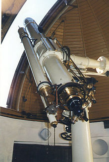
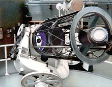
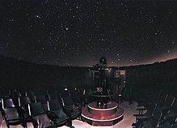
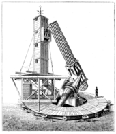
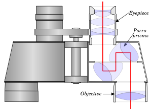
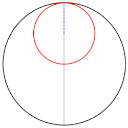
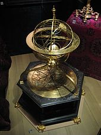
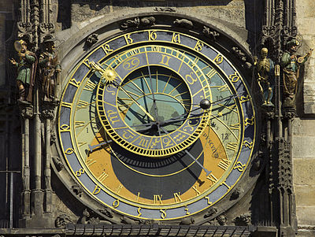
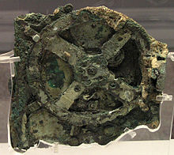

A telescope is an optical instrument using lenses, curved mirrors, or a combination of both to observe distant objects, or various devices used to observe distant objects by their emission, absorption, or reflection of electromagnetic radiation. The first
known practical telescopes were refracting telescopes invented in the Netherlands at the beginning of the 17th century, by using glass lenses. They were used for both terrestrial applications and astronomy. The reflecting telescope, which
uses mirrors to collect and focus light, was invented within a few decades of the first refracting telescope. In the 20th century, many new types of telescopes were invented, including radio telescopes in the 1930s and infrared telescopes
in the 1960s. The word telescope now refers to a wide range of instruments capable of detecting different regions of the electromagnetic spectrum, and in some cases other types of detectors.
 Hooker reflecting telescope at Mount Wilson Observatory near Los Angeles,
USA") The word telescope (from the Ancient Greek τῆλε, tele "far " and σκοπεῖν, skopein
"to look or see "; τηλεσκόπος, teleskopos "far-seeing ") was coined in 1611 by the Greek mathematician Giovanni Demisiani for one of Galileo Galilei's instruments presented at a banquet at the Accademia dei Lincei. In the Starry Messenger,
Galileo had used the term perspicillum. The earliest existing record of a telescope was a 1608 patent submitted to the government in the Netherlands by Middelbur spectacle maker Hans Lippershey for a refracting telescope. The actual inventor
is unknown but word of it spread through Europe. Galileo heard about it and, in 1609, built his own version, and made his telescopic observations of celestial objects. The idea that the objective, or light-gathering element, could be a mirror
instead of a lens was being investigated soon after the invention of the refracting telescope. The potential advantages of using parabolic mirrors—reduction of spherical aberration and no chromatic aberration—led to many proposed designs and
several attempts to build reflecting telescopes. In 1668, Isaac Newton built the first practical reflecting telescope, of a design which now bears his name, the Newtonian reflector. The invention of the achromatic lens in 1733 partially corrected
color aberrations present in the simple lens and enabled the construction of shorter, more functional refracting telescopes. Reflecting telescopes, though not limited by the color problems seen in refractors, were hampered by the use of fast
tarnishing speculum metal mirrors employed during the 18th and early 19th century—a problem alleviated by the introduction of silver coated glass mirrors in 1857, and aluminized mirrors in 1932. The maximum physical size limit for refracting
telescopes is about 1 meter (40 inches), dictating that the vast majority of large optical researching telescopes built since the turn of the 20th century have been reflectors. The largest reflecting telescopes currently have objectives larger
than 10 m (33 feet), and work is underway on several 30-40m designs. The 20th century also saw the development of telescopes that worked in a wide range of wavelengths from radio to gamma-rays. The first purpose built radio telescope went
into operation in 1937. Since then, a large variety of complex astronomical instruments have been developed.
The word telescope (from the Ancient Greek τῆλε, tele "far " and σκοπεῖν, skopein
"to look or see "; τηλεσκόπος, teleskopos "far-seeing ") was coined in 1611 by the Greek mathematician Giovanni Demisiani for one of Galileo Galilei's instruments presented at a banquet at the Accademia dei Lincei. In the Starry Messenger,
Galileo had used the term perspicillum. The earliest existing record of a telescope was a 1608 patent submitted to the government in the Netherlands by Middelbur spectacle maker Hans Lippershey for a refracting telescope. The actual inventor
is unknown but word of it spread through Europe. Galileo heard about it and, in 1609, built his own version, and made his telescopic observations of celestial objects. The idea that the objective, or light-gathering element, could be a mirror
instead of a lens was being investigated soon after the invention of the refracting telescope. The potential advantages of using parabolic mirrors—reduction of spherical aberration and no chromatic aberration—led to many proposed designs and
several attempts to build reflecting telescopes. In 1668, Isaac Newton built the first practical reflecting telescope, of a design which now bears his name, the Newtonian reflector. The invention of the achromatic lens in 1733 partially corrected
color aberrations present in the simple lens and enabled the construction of shorter, more functional refracting telescopes. Reflecting telescopes, though not limited by the color problems seen in refractors, were hampered by the use of fast
tarnishing speculum metal mirrors employed during the 18th and early 19th century—a problem alleviated by the introduction of silver coated glass mirrors in 1857, and aluminized mirrors in 1932. The maximum physical size limit for refracting
telescopes is about 1 meter (40 inches), dictating that the vast majority of large optical researching telescopes built since the turn of the 20th century have been reflectors. The largest reflecting telescopes currently have objectives larger
than 10 m (33 feet), and work is underway on several 30-40m designs. The 20th century also saw the development of telescopes that worked in a wide range of wavelengths from radio to gamma-rays. The first purpose built radio telescope went
into operation in 1937. Since then, a large variety of complex astronomical instruments have been developed.
A radio telescope is a specialized antenna and radio receiver used to receive radio waves from astronomical radio sources in the sky. Radio telescopes are the main observing instrument used in radio astronomy, which studies the radio frequency portion
of the electromagnetic spectrum emitted by astronomical objects, just as optical telescopes are the main observing instrument used in traditional optical astronomy which studies the light wave portion of the spectrum coming from astronomical
objects. Radio telescopes are typically large parabolic ("dish ") antennas similar to those employed in tracking and communicating with satellites and space probes. They may be used singly or linked together electronically in an array.
 Unlike
optical telescopes, radio telescopes can be used in the daytime as well as at night. Since astronomical radio sources such as planets, stars, nebulas and galaxies are very far away, the radio waves coming from them are extremely weak, so radio
telescopes require very large antennas to collect enough radio energy to study them, and extremely sensitive receiving equipment. Radio observatories are preferentially located far from major centers of population to avoid electromagnetic
interference (EMI) from radio, television, radar, motor vehicles, and other man-made electronic devices. Radio waves from space were first detected by engineer Karl Guthe Jansky in 1932 at Bell Telephone Laboratories in Holmdel, New Jersey
using an antenna built to study noise in radio receivers. The first purpose-built radio telescope was a 9-meter parabolic dish constructed by radio amateur Grote Reber in his back yard in Wheaton, Illinois in 1937. The sky survey he did with
it is often considered the beginning of the field of radio astronomy. in the 1960s. The word telescope now refers to a wide range of instruments capable of detecting different regions of the electromagnetic spectrum, and in some cases other
types of detectors. The first radio antenna used to identify an astronomical radio source was one built by Karl Guthe Jansky, an engineer with Bell Telephone Laboratories, in 1932. Jansky was assigned the job of identifying sources of static
that might interfere with radio telephone service. Jansky's antenna was an array of dipoles and reflectors designed to receive short wave radio signals at a frequency of 20.5 MHz (wavelength about 14.6 meters). It was mounted on a turntable
that allowed it to rotate in any direction, earning it the name "Jansky 's merry-go-round". It had a diameter of approximately 100 ft (30 m) and stood 20 ft (6 m) tall. By rotating the antenna, the direction of the received interfering radio
source (static) could be pinpointed. A small shed to the side of the antenna housed an analog pen-and-paper recording system. After recording signals from all directions for several months, Jansky eventually categorized them into three types
of static: nearby thunderstorms, distant thunderstorms, and a faint steady hiss of unknown origin.
Unlike
optical telescopes, radio telescopes can be used in the daytime as well as at night. Since astronomical radio sources such as planets, stars, nebulas and galaxies are very far away, the radio waves coming from them are extremely weak, so radio
telescopes require very large antennas to collect enough radio energy to study them, and extremely sensitive receiving equipment. Radio observatories are preferentially located far from major centers of population to avoid electromagnetic
interference (EMI) from radio, television, radar, motor vehicles, and other man-made electronic devices. Radio waves from space were first detected by engineer Karl Guthe Jansky in 1932 at Bell Telephone Laboratories in Holmdel, New Jersey
using an antenna built to study noise in radio receivers. The first purpose-built radio telescope was a 9-meter parabolic dish constructed by radio amateur Grote Reber in his back yard in Wheaton, Illinois in 1937. The sky survey he did with
it is often considered the beginning of the field of radio astronomy. in the 1960s. The word telescope now refers to a wide range of instruments capable of detecting different regions of the electromagnetic spectrum, and in some cases other
types of detectors. The first radio antenna used to identify an astronomical radio source was one built by Karl Guthe Jansky, an engineer with Bell Telephone Laboratories, in 1932. Jansky was assigned the job of identifying sources of static
that might interfere with radio telephone service. Jansky's antenna was an array of dipoles and reflectors designed to receive short wave radio signals at a frequency of 20.5 MHz (wavelength about 14.6 meters). It was mounted on a turntable
that allowed it to rotate in any direction, earning it the name "Jansky 's merry-go-round". It had a diameter of approximately 100 ft (30 m) and stood 20 ft (6 m) tall. By rotating the antenna, the direction of the received interfering radio
source (static) could be pinpointed. A small shed to the side of the antenna housed an analog pen-and-paper recording system. After recording signals from all directions for several months, Jansky eventually categorized them into three types
of static: nearby thunderstorms, distant thunderstorms, and a faint steady hiss of unknown origin.
A refracting telescope (also called a refractor) is a type of optical telescope that uses a lens as its objective to form an image (also referred to a dioptric telescope). The refracting telescope design was originally used in spy glasses and astronomical
telescopes but is also used for long focus camera lenses. Although large refracting telescopes were very popular in the second half of the 19th century, for most research purposes, the refracting telescope has been superseded by the reflecting
telescope, which allows larger apertures.
 A refractor's magnification is calculated by dividing the focal length of the objective lens by that of the eyepiece. Refracting telescopes typically have a lens at the front, then a long tube, then an eyepiece or instrumentation at the rear,
where the telescope view comes to focus. Originally, telescopes had an objective of one element, but a century later, two and even three element lenses were made. Refracting telescope is a technology that has often been applied to other optical
devices such as binoculars and zoom lenses/telephoto lens/Long-focus lens. Refractors were the earliest type of optical telescope. The first record of a refracting telescope appeared in the Netherlands about 1608, when a spectacle maker from
Middelburg named Hans Lippershey unsuccessfully tried to patent one. News of the patent spread fast and Galileo Galilei, happening to be in Venice in the month of May 1609, heard of the invention, constructed a version of his own, and applied
it to making astronomical discoveries. All refracting telescopes use the same principles. The combination of an objective lens 1 and some type of eyepiece 2 is used to gather more light than the human eye is able to collect on its own, focus
it 5, and present the viewer with a brighter, clearer, and magnified virtual image 6. The objective in a refracting telescope refracts or bends light. This refraction causes parallel light rays to converge at a focal point; while those not
parallel converge upon a focal plane. The telescope converts a bundle of parallel rays to make an angle α, with the optical axis to a second parallel bundle with angle β. The ratio β/α is called the angular magnification. It equals the ratio
between the retinal image sizes obtained with and without the telescope. Refracting telescopes can come in many different configurations to correct for image orientation and types of aberration. Because the image was formed by the bending
of light, or refraction, these telescopes are called refracting telescopes or refractors.
A reflecting telescope (also called a reflector) is a telescope that uses a single or a combination of curved mirrors that reflect light and form an image. The reflecting telescope was invented in the 17th century, by Isaac Newton, as an alternative to
the refracting telescope which, at that time, was a design that suffered from severe chromatic aberration. Although reflecting telescopes produce other types of optical aberrations, it is a design that allows for very large diameter objectives.
Almost all of the major telescopes used in astronomy research are reflectors. Reflecting telescopes come in many design variations and may employ extra optical elements to improve image quality or place the image in a mechanically advantageous
position. Since reflecting telescopes use mirrors, the design is sometimes referred to as a "catoptric" telescope.
 From the time of Newton to the 1800s, the mirror itself was made of metal – usually speculum metal. This type included Newton's first designs and even the largest telescopes of the 19th century, the Leviathan of Parsonstown with a 1.8 meter
wide metal mirror. In the 19th century a new method using a block of glass coated with very thin layer of silver began to become more popular by the turn of the century. A major turning point in reflecting telescopes was the Paris Observatory
1.2 m of 1878, A.A. Common telescopes which lead to the Crossley and Harvard reflecting telescopes, which helped establish a better reputation for reflecting telescopes as the metal mirror designs were noted for their drawbacks. Chiefly the
metal mirrors only reflected about 2/3 of the light and the metal would tarnish. After multiple polishings and tarnishings the mirror could lose its precise figuring needed. Reflecting telescopes became extraordinarily popular for astronomy
and many famous telescopes such as the Hubble Space Telescope and popular amateur models use this design. In addition, the reflection telescope principle was applied to other wavelengths of light, and for example, X-Ray telescopes also use
the reflection principle to make image forming optics. Isaac Newton has been generally credited with building the first reflecting telescope in 1668. It used a spherically ground metal primary mirror and a small diagonal mirror in an optical
configuration that has come to be known as the Newtonian telescope.
A planetarium (plural planetaria or planetariums) is a theatre built primarily for presenting educational and entertaining shows about astronomy and the night sky, or for training in celestial navigation. A dominant feature of most planetaria is the large
dome-shaped projection screen onto which scenes of stars, planets, and other celestial objects can be made to appear and move realistically to simulate the complex 'motions of the heavens'. position. Since reflecting telescopes use mirrors,
the design is sometimes referred to as a "catoptric" telescope.
 The celestial scenes can be created using a wide variety of technologies, for example precision-engineered 'star balls' that combine optical and electro-mechanical technology, slide projector, video and fulldome projector systems, and lasers.
Whatever technologies are used, the objective is normally to link them together to simulate an accurate relative motion of the sky. Typical systems can be set to simulate the sky at any point in time, past or present, and often to depict the
night sky as it would appear from any point of latitude on Earth. Planetariums range in size from the 37 meter dome in St. Petersburg, Russia (called “Planetarium No 1”) to three-meter inflatable portable domes where attendees sit on the floor.
The largest planetarium in the Western Hemisphere is the Jennifer Chalsty Planetarium at Liberty Science Center in New Jersey (27 meters in diameter). The Birla Planetarium in Kolkata, India is the largest by seating capacity (630 seats).
Thereafter, the China Science and Technology Museum Planetarium in Beijing, China has the largest seating capacity (442 seats). In North America, the Hayden Planetarium at the American Museum of Natural History in New York City has the greatest
number of seats (423).The term planetarium is sometimes used generically to describe other devices which illustrate the solar system, such as a computer simulation or an orrery. Planetarium software refers to a software application that renders
a three-dimensional image of the sky onto a two-dimensional computer screen. The term planetarian is used to describe a member of the professional staff of a planetarium.
The Newtonian telescope, also called the Newtonian reflector or just the Newtonian, is a type of reflecting telescope invented by the English scientist Sir Isaac Newton (1642–1727), using a concave primary mirror and a flat diagonal secondary mirror.
Newton's first reflecting telescope was completed in 1668 and is the earliest known functional reflecting telescope. The Newtonian telescope's simple design has made it very popular with amateur telescope makers.
 Newton's idea for a reflecting telescope was not new. Galileo Galilei and Giovanni Francesco Sagredo had discussed using a mirror as the image forming objective soon after the invention of the refracting telescope,[4] and others, such as Niccolò
Zucchi, claimed to have experimented with the idea as far back as 1616. Newton may even have read James Gregory's 1663 book Optica Promota which described reflecting telescope designs using parabolic mirrors (a telescope Gregory had been trying
unsuccessfully to build). Newton built his reflecting telescope because he suspected it could prove his theory that white light is composed of a spectrum of colours. Colour distortion (chromatic aberration) was the primary fault of refracting
telescopes of Newton's day, and there were many theories as to what caused it. During the mid-1660s with his work on the theory of colour, Newton concluded this defect was caused by the lens of the refracting telescope behaving the same as
prisms he was experimenting with, breaking white light into a rainbow of colours around bright astronomical objects. If this were true, then chromatic aberration could be eliminated by building a telescope which did not use a lens – a reflecting
telescope.In late 1668 Isaac Newton built his first reflecting telescope. He chose an alloy (speculum metal) of tin and copper as the most suitable material for his objective mirror. He later devised means for shaping and grinding the mirror
and may have been the first to use a pitch lap to polish the optical surface. He chose a spherical shape for his mirror instead of a parabola to simplify construction; even though it would introduce spherical aberration, it would still correct
chromatic aberration.
Binoculars or field glasses are two telescopes mounted side-by-side and aligned to point in the same direction, allowing the viewer to use both eyes (binocular vision) when viewing distant objects. Most are sized to be held using both hands, although
sizes vary widely from opera glasses to large pedestal mounted military models. Unlike a (monocular) telescope, binoculars give users a three-dimensional (3D) image: for nearer objects the two views, presented to each of the viewer's eyes
from slightly different viewpoints, produce a merged view with an impression of depth.
 An improved image and higher magnification is achieved in binoculars employing Keplerian optics, where the image formed by the objective lens is viewed through a positive eyepiece lens (ocular). Since the Keplerian configuration produces an
inverted image, different methods are used to turn the image right way up.In aprismatic binoculars with Keplerian optics (which were sometimes called "twin telescopes") each tube has one or two additional lenses (relay lens) between the objective
and the ocular. These lenses are used to erect the image. The binoculars with erecting lenses had a serious disadvantage: they are too long. Such binoculars were popular in the 1800s (for example, G.& S. Merz models), but became obsolete shortly
after the Karl Zeiss company introduced improved prism binoculars in the 1890s. In aprismatic binoculars with Keplerian optics (which were sometimes called "twin telescopes") each tube has one or two additional lenses (relay lens) between
the objective and the ocular. These lenses are used to erect the image. The binoculars with erecting lenses had a serious disadvantage: they are too long. Such binoculars were popular in the 1800s (for example, G.& S. Merz models), but became
obsolete shortly after the Karl Zeiss company introduced improved prism binoculars in the 1890s. Optical prisms added to the design enabled the display of the image the right way up without needing as many lenses, and decreasing the overall
length of the instrument, typically using a Porro prism or roof-prisms.
The Tusi couple is a mathematical device in which a small circle rotates inside a larger circle twice the diameter of the smaller circle. Rotations of the circles cause a point on the circumference of the smaller circle to oscillate back and forth in
linear motion along a diameter of the larger circle. The Tusi couple is a 2-cusped hypocycloid.
 The couple was first proposed by the 13th-century Persian astronomer and mathematician Nasir al-Din al-Tusi in his 1247 Tahrir al-Majisti (Commentary on the Almagest) as a solution for the latitudinal motion of the inferior planets, and later
used extensively as a substitute for the equant introduced over a thousand years earlier in Ptolemy's Almagest. Some modern commentators also call the Tusi couple a "rolling device" and describe it as a small circle rolling inside a large
fixed circle. However, Tusi himself described it differently: If two coplanar circles, the diameter of one of which is equal to half the diameter of the other, are taken to be internally tangent at a point, and if a point is taken on the smaller
circle—and let it be at the point of tangency—and if the two circles move with simple motions in opposite direction in such a way that the motion of the smaller [circle] is twice that of the larger so the smaller completes two rotations for
each rotation of the larger, then that point will be seen to move on the diameter of the larger circle that initially passes through the point of tangency, oscillating between the endpoints. Nasir al-Din al-Tusi, born in the town of Tus, Iran
in 1201, is acknowledged throughout the Islamic world as one of the 'Great Wisdoms'. Tusi was the first astronomer to attempt a solution which would provide for latitudinal motion without introducing a longitudinal component. To do so, he
proposed in a work called Tahrir al-Majisti, which was completed in 1247, that the oscillatory motion be produced by the combined uniform circular motions of two identical circles, one riding on the circumference of the other. At that point,
Tusi simply states that if one of these circles were to move at a uniform speed equal to twice the speed of the other, and in a direction to it, then any point on the circumference of the first circle would oscillate in a straight line along
one of the diameters of the second circle.
An armillary sphere (variations are known as spherical astrolabe, armilla, or armil) is a model of objects in the sky (on the celestial sphere), consisting of a spherical framework of rings, centred on Earth or the Sun, that represent lines of celestial
longitude and latitude and other astronomically important features, such as the ecliptic. As such, it differs from a celestial globe, which is a smooth sphere whose principal purpose is to map the constellations. It was invented separately
in ancient Greece and ancient China, with later use in the Islamic world and Medieval Europe.
 With the Earth as center, an armillary sphere is known as Ptolemaic. With the Sun as
center, it is known as Copernican. The flag of Portugal features an armillary sphere. The armillary sphere is also featured in Portuguese heraldry, associated with the Portuguese discoveries during the Age of Exploration. In the flag of the
Empire of Brazil, the armillary sphere is also featured. Throughout Chinese history, astronomers have created celestial globes (Chinese: 浑象) to assist the observation of the stars. The Chinese also used the armillary sphere in aiding calendrical
computations and calculations. According to Needham, the earliest development of the armillary sphere in China goes back to the astronomers Shi Shen and Gan De in the 4th century BC, as they were equipped with a primitive single-ring armillary
instrument. This would have allowed them to measure the north polar distance (declination) a measurement that gave the position in a xiu (right ascension).[3] Needham's 4th century dating, however, is rejected by British sinologist Christopher
Cullen, who traces the beginnings of these devices to the 1st century BC. During the Western Han Dynasty (202 BC – 9 AD) additional developments made by the astronomers Luoxia Hong (zh:落下闳), Xiangyu Wangren, and Geng Shouchang (耿壽昌) advanced
the use of the armillary in its early stage of evolution. In 52 BC, it was the astronomer Geng Shouchang who introduced the first permanently fixed equatorial ring of the armillary sphere. In the subsequent Eastern Han Dynasty (23–220 AD)
period, the astronomers Fu An and Jia Kui added the ecliptic ring by 84 AD. With the famous statesman, astronomer, and inventor Zhang Heng (张衡, 78–139 AD), the sphere was totally complete in 125 AD, with horizon and meridian rings. The world's
first water-powered celestial globe was created by Zhang Heng, who operated his armillary sphere by use of an inflow clepsydra clock (see Zhang's article for more detail).
An astronomical clock, horologium, or orloj is a clock with special mechanisms and dials to display astronomical information, such as the relative positions of the sun, moon, zodiacal constellations, and sometimes major planets.
 The term is loosely used to refer to any clock that shows, in addition to the time of day, astronomical information. This could include the location of the sun and moon in the sky, the age and Lunar phases, the position of the sun on the ecliptic
and the current zodiac sign, the sidereal time, and other astronomical data such as the moon's nodes (for indicating eclipses) or a rotating star map. The term should not be confused with astronomical regulator, a high precision but otherwise
ordinary pendulum clock used in observatories. Astronomical clocks usually represent the solar system using the geocentric model. The center of the dial is often marked with a disc or sphere representing the earth, located at the center of
the solar system. The sun is often represented by a golden sphere (as it initially appeared in the Antikythera Mechanism, back in the 2nd century BC), shown rotating around the earth once a day around a 24-hour analog dial. This view accorded
both with the daily experience and with the philosophical world view of pre-Copernican Europe. Research in 2011 and 2012 led an expert group of researchers to posit that European astronomical clocks are descended from the technology of the
Antikythera mechanism. In the 11th century, the Song dynasty Chinese horologist, mechanical engineer, and astronomer Su Song created a water-driven astronomical clock for his clock-tower of Kaifeng City. Su Song is noted for having incorporated
an escapement mechanism and earliest known endless power-transmitting chain drive for his clock-tower and armillary sphere to function. Contemporary Muslim astronomers and engineers also constructed a variety of highly accurate astronomical
clocks for use in their observatories, such as the castle clock (a water-powered astronomical clock) by Al-Jazari in 1206, and the astrolabic clock by Ibn al-Shatir in the early 14th century.
The Antikythera mechanism (/ˌæntɪkɪˈθɪərə/ AN-tih-kih-THIH-ə-rə, /ˌæntiːˈkɪθʌrə/ AN-tee-KIH-thuh-rə) is an ancient hand-powered Greek analogue computer which has also been described as the first example of such device used to predict astronomical positions
and eclipses for calendar and astrological purposes decades in advance. It could also be used to track the four-year cycle of athletic games which was similar to an Olympiad, the cycle of the ancient Olympic Games.
 This artefact was retrieved from the sea in 1901, and identified on 17 May 1902 as containing
a gear by archaeologist Valerios Stais, among wreckage retrieved from a shipwreck off the coast of the Greek island Antikythera. The instrument is believed to have been designed and constructed by Greek scientists and has been variously dated
to about 87 BC, or between 150 and 100 BC, or to 205 BC, or to within a generation before the shipwreck, which has been dated to approximately 70–60 BC. The device, housed in the remains of a 34 cm × 18 cm × 9 cm (13.4 in × 7.1 in × 3.5 in)
wooden box, was found as one lump, later separated into three main fragments which are now divided into 82 separate fragments after conservation efforts. Four of these fragments contain gears, while inscriptions are found on many others. The
largest gear is approximately 14 centimetres (5.5 in) in diameter and originally had 223 teeth. It is a complex clockwork mechanism composed of at least 30 meshing bronze gears. A team led by Mike Edmunds and Tony Freeth at Cardiff University
used modern computer x-ray tomography and high resolution surface scanning to image inside fragments of the crust-encased mechanism and read the faintest inscriptions that once covered the outer casing of the machine. Detailed imaging of the
mechanism suggests that it had 37 gear wheels enabling it to follow the movements of the Moon and the Sun through the zodiac, to predict eclipses and even to model the irregular orbit of the Moon, where the Moon's velocity is higher in its
perigee than in its apogee. This motion was studied in the 2nd century BC by astronomer Hipparchus of Rhodes, and it is speculated that he may have been consulted in the machine's construction.